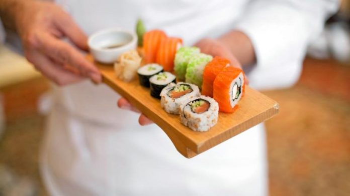
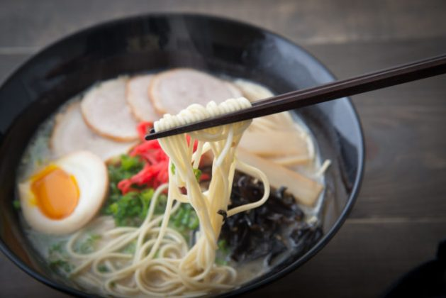
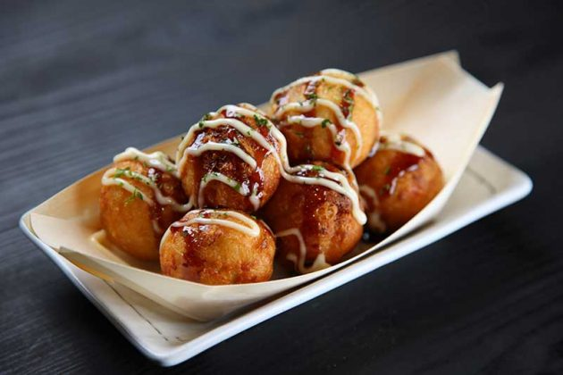
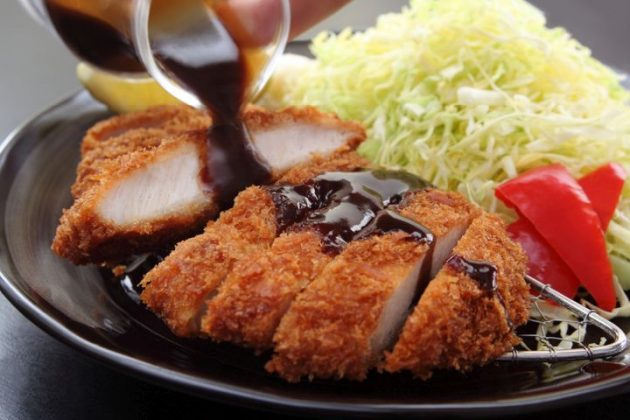

La gastronomia de tokio llama mucho la atencion de los occidentales, pero hay que tener en cuenta que a la hora de la comida, tambien existen costumbres y reglas que debemos conocer y respetar. En tokio los restaurantes suelen estar especializados en un tipo de comida. A la entrada de muchos locales tienen una replica en cerca de los platos que ofrecen, si tienes algun problema para pedir, puedes salir y señalarles lo que quieres. Tambien es frecuente encontrar en la entrada una maquina con la foto de los platos, pagas ahi y obtienes un ticket que tienes que entregar al camarero para que traiga tu comida no se paga nunca en la mesa y en tokio no se deja nunca propina.
Imagenes de los platillos mas tipicos de tokio:
  